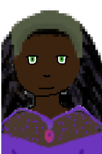
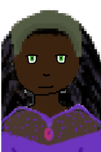

You are the greatest detective in the land.
A Dutchess was murdered.
The King has choosen you to investigate.
You'll meet unique characters who help you solve this murder.
Make friends.
Make enemies.
But only together can you solve the murder...
Your choices affect the story!
Unlock different endings based on which side you join.


 
